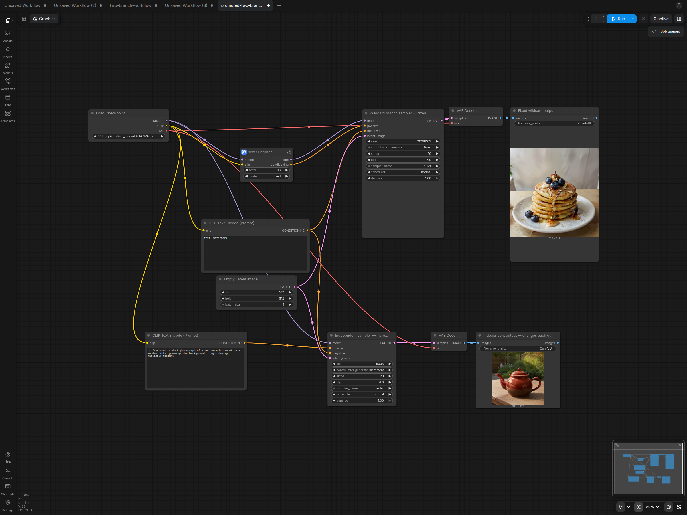

1 · Promoted fixed seed stays 513Promoted mode=fixed; interior increment stays selected. Submitted seed: 513; visible seed: 513 in all three patched queues.
2 · Same rendered branchWildcard, sampler, decode and SaveImage are cached. Sampler seed: 20261103. Pancake RGB bytes match across all three queues.
3 · Independent sampler incrementsSubmitted: 9002; visible: 9003 (the next seed). Sampler, decode and SaveImage execute each time; three teapot images have distinct RGB hashes.